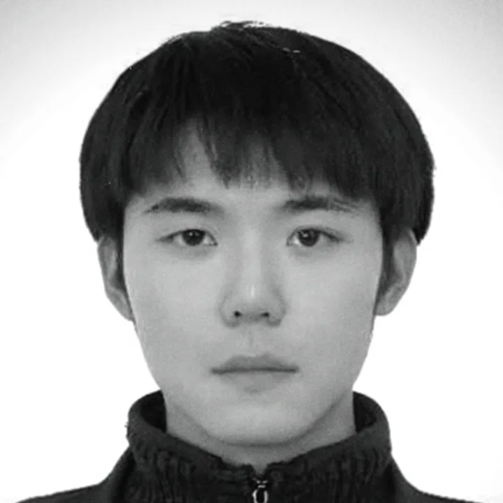

Yibo Zhang
Ph.D. Candidate in Visual Design · Yonsei University
I am a Ph.D. candidate in Visual Design at Yonsei University, based in Seoul, South Korea.
My research explores how interactive systems shape relationships between people, artificial intelligence, and the living world. I combine human-centered research, prototyping, and design to examine everyday experiences of trust, culture, and inclusion. My doctoral studies are funded by the China Scholarship Council (CSC).
Research interests
- Human–AI interaction and relationships
- More-than-human and sustainable design
- Cultural experience and inclusive design for ageing
